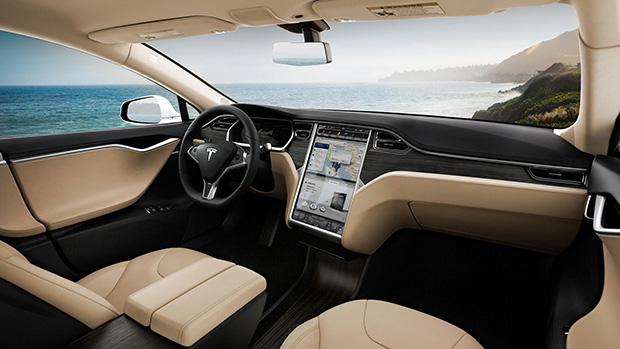
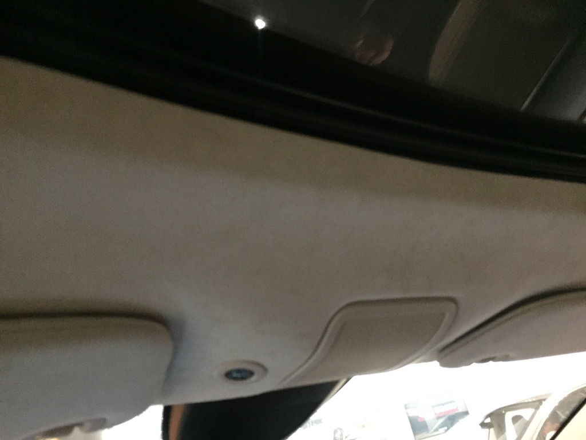
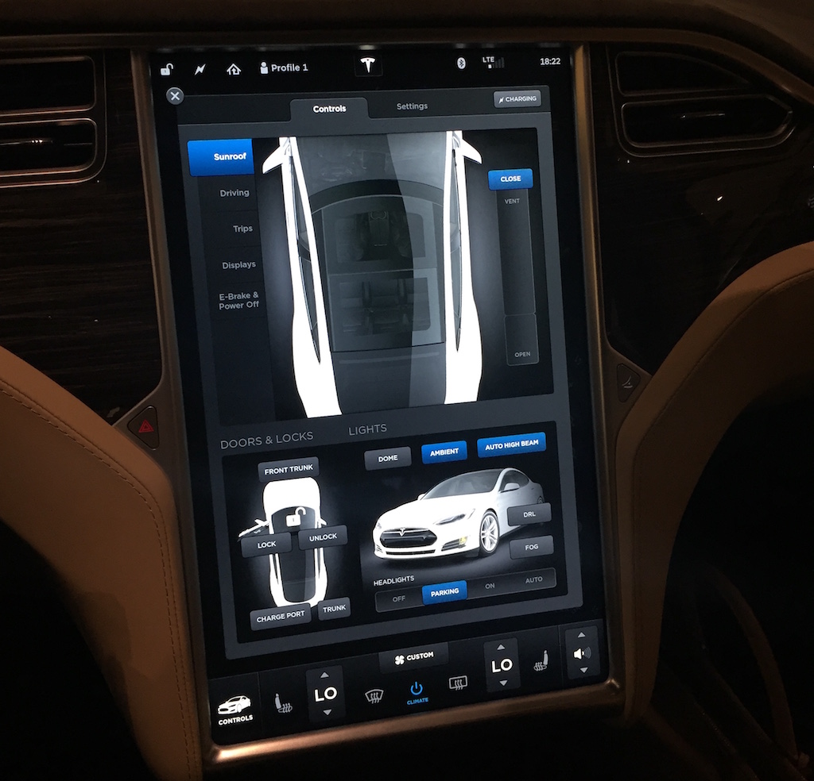
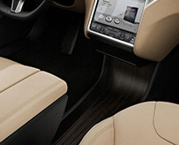
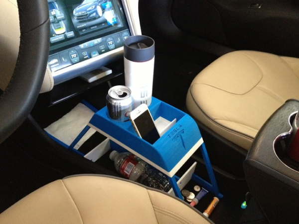

这幅美丽的图片，就是大名鼎鼎的Tesla电动车（Model S）的内景。然而你有没有发现，其中有一些不大对劲的地方？虽然我看好电动汽车，它们环保，安静，加速敏捷，然而我发现Tesla的这款Model S，其实有一些严重的设计失误。
纵观Model S的内景，你会发现这车里面怎么光溜溜的，就没看到几个按钮。确实如此，Model S内部设施的控制，基本上完全靠中间那个很大的触摸屏。
顶棚上有一个天窗，却没看见天窗的开关。通常说来，当人们看见门或者窗户，他们期望有一个开关，设在旁边顺手的地方。然而你在Model S里面一抬头，却看不见任何可以按下或者掰动的开关。顶棚上面几乎是光溜溜的一片：

有些人可能觉得这样的设计，比其它车子更加美观，简洁。我不想跟你讨论美学的问题，就算它更加美观吧。然而你可能没想到，这种“美观”其实有很大的代价。一个很简单的问题是：你怎么打开天窗？答案：你必须使用触摸屏！

你只要在触摸屏上找到一个叫“Controls”的页面，然后从左边的控制栏选择“Sunroof”，然后在右边会出现一个车子的图片，和一个滚动条。你把滚动条往下拉，天窗就打开了。就是这么简单！
然而，我并不认为这叫“简单”。相反，它其实让简单的问题变复杂，变麻烦了。下面我列举一下我所观察到的几个问题：
天窗控制器不在天窗旁边。触摸屏跟天窗，处于风马不及的位置。这违反了一条基本的设计原理：控制器应该很容易找到，最好在它所控制的东西上面或者旁边。如果用户想打开天窗，他应该能够在天窗旁边，找到一个明显是用来打开它的开关。几乎所有其它车子，天窗开关都在顶棚上，不知Model S的设计者，为何要抛弃这种久经考验的设计。
触摸屏上干扰信息太多，不容易找到正确的按钮。触摸屏太大，上面显示着太多的信息，而且它们的位置也不是很符合逻辑。例如，为什么有些控制（比如天窗）在tab里面藏着，而另外有些（比如门锁）直接露在外面？以至于你一眼看去，会不知所措。
相比之下，其它牌子汽车的硬件天窗控制器，附近没有很多干扰信息。特别是像奔驰车，天窗控制器是很大一块在顶棚上，而且处于控制板的中央位置。旁边只有一些顶灯的开关，而且这些开关，全都对应着它们所控制的灯在顶棚上的位置。这种排列方式，在设计学上叫做“自然映射”（natural mapping）。你不需要多次的摸索和记忆，甚至不需要看开关上的标记。只根据开关的相对位置，你就知道哪一个开关控制哪一盏灯！
查找天窗控制器的“逻辑路径”太深。从最开头的触摸屏界面，直到找到打开天窗的控件，你需要进入至少两层菜单。如果菜单之前停留在另外的状态，你还需要点击某个按钮，回到“主界面”，然后还要从上往下进入两级菜单。这种设计所需要的“逻辑路径”，长度>=3。这种多层的“间接访问”，很容易把人搞糊涂。如果在紧急情况下需要找到控制器（比如通过天窗逃生），就会不知所措。
比较一下其它车子的设计吧。其它牌子车的顶棚上，一般有一个比较大的，明显是用来打开天窗的开关。不管车子当时处于什么状态，直接伸手就可以摸到这个开关。这种设计所需要的“逻辑路径”，长度=1，也就是说是直接的。
触屏的界面并不直观。仔细观察触屏上的控件，它们的操作方式并不是那么直观的。看到那个滚动条一样的东西，我该是点击呢，还是拖动呢？“VENT”，“OPEN”那几个字的位置，到底表示什么呢？我如何让天窗向上倾斜通风（tilt）？真是有点莫名其妙的感觉，恐怕要看说明书，摸索一会儿才能知道这到底怎么用。
相比之下，其它牌子汽车的硬件开关的设计，其实非常的直观。开关向后一拉，天窗就打开。向前一推，天窗就关闭。有些车子的天窗可以向上倾斜一定的角度（tilt），所以你可以把这按钮向上一推，天窗就进入倾斜通风的状态。
这种硬件开关的设计，符合了“自然映射”的原理。天窗的开关，成为了天窗的一个“模型”（model）。开关的位置，正好跟天窗平行。开关的运动方式，跟天窗的运动方式，产生一种“自然”的对应关系。开关向后，天窗也向后。开关向前，天窗也向前。开关被向上推，天窗也向上倾斜。这是非常好的设计。
触摸屏缺乏触感和“力反馈”，无法进行“盲操作”。由于触摸屏是平的，所以它无法提供触觉和力反馈。你无法光靠手就摸到按钮的位置，而必须用眼睛看屏幕。当你找到并且拖动屏幕上的滚动条，你的手指不能得到任何力和振动的反馈。你不能立即感觉到，是否已经真的触发了“开天窗”这个操作。只有当天窗开始移动，你才知道刚才的操作是否成功。
相比之下，硬件天窗开关具有很大的优势。有些车子的天窗开关，设计得符合人体工学，正好符合你的手指的形状。摸起来容易，掰起来舒服，有感觉。手往上一摸，就能找到天窗控制器，之后不用眼睛就能操作。
像天窗开关这种“盲操作”，在开车的时候特别重要，因为开车时你的眼睛应该随时注视前方的道路。如果眼睛开小差去看屏幕了，就可能出车祸。这就跟开车时用手机发短信一样危险。触摸屏看起来很酷，而其实是降低了汽车的安全性。
仔细观察一下Model S，你会发现它的内部几乎没有硬件的开关。几乎所有的设施：天窗，空调气孔，窗户，门，后备箱，充电盖，…… 全都是用这个触摸屏来控制。
从系统设计的角度来看，这个触摸屏就是一个“中央薄弱环节”（single point of failure）。只要触摸屏一出问题，你就会失去对几乎所有设施的控制。根据这篇文章，有的Tesla用户报告说，他的Model S在12000英里的时候，触摸屏突然坏掉，以至于门把手都没法用了！
Just before the car went in for its annual service, at a little over 12,000 miles, the center screen went blank, eliminating access to just about every function of the car…
相比之下，其它汽车的硬件开关位置是分散的，它们的电路逻辑是相对独立的。一个开关坏掉了，另外一个还可以用。其它车子的屏幕，一般只用来显示倒车摄像信息，以及音乐娱乐等无关紧要的东西。Tesla用这个屏幕来控制所有的配件，真的是发挥过度了。
另外，我发现Model S的触摸屏，其实在一个很不舒服的位置。如果我靠在司机的座位上，我的手是无法顺利地碰到屏幕右边的。我必须启用我的腹肌，稍微坐起来一点，努力伸出右手，才能够得着那个位置。
如果触摸屏的位置稍微往下放一点，倾斜度降低一些，就会方便很多。另外，这个触摸屏真的不需要做那么大。
Model S另外一个奇葩的地方是，触摸屏下方，直到座位中部，有一片很低的，光溜溜的平面：

这貌似是用来放随身物品的。然而这个平台，低得几乎到了地板上。如果往里面放置物品，拿起来会非常的不顺手，甚至需要弯腰下去。在这里放物品，恐怕会很容易被脚踢翻。而且因为整个平面是光滑的，车子加速减速时，东西可能会到处乱跑。真是没有搞明白这个地方为何设计成这个样子。
另外有用户反映，Model S的咖啡杯座，被设置在一个很容易被手肘碰翻的位置。某些Tesla的“专家用户”对此的建议是，去买“防溅”的咖啡杯。有些聪明人甚至自己设计，并且用3D打印机做出了一个架子来放咖啡：

我对此DIY的举动非常的无语。本来Tesla的设计师应该做好的东西，居然需要自己动手 :P
写到这里我不得不说，像汽车内饰这种看似简单的事情，它的设计真的不是一个新的公司短短几年就可以摸索清楚的。有些设计貌似很新很酷，直到你开始用它，才发现是有问题的。忘记历史就等于毁灭未来，不吸取其它人的经验教训，把好的东西学过来，新的设计是很难成功的。
如果你对汽车的设计感兴趣，我希望你多多观察像奔驰（Mercedes-Benz）一类的老牌汽车。曾经在很多中国人的心目中，奔驰是奢华的象征。然而如果你仔细观察过奔驰车，就会发现它其实真的物有所值。奔驰在德国是很普通，很平民的车子，并不是像BMW或者奥迪一样，常常是用来炫耀的工具。奔驰车上许许多多贴心而巧妙的设计，真的不是其它牌子和Tesla可以比拟的。